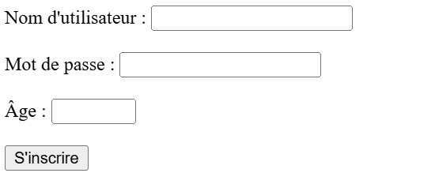
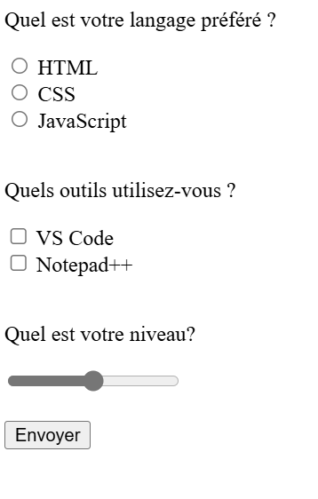

Les formulaires en HTML
Les formulaires HTML permettent d’instaurer un dialogue entre un utilisateur et un site web ou une application. Ils
permettent à l'utilisateur d'envoyer des données au site web. La plupart du temps, ces données sont envoyées à des
serveurs web mais la page peut aussi les intercepter et les utiliser elle-même.
L'analyse et le traitement du formulaire devant être effectués côté serveur, la page
du formulaire sera écrite en langage PHP. En cliquant sur le bouton envoyer les contenus des zones du texte du formulaire seront transmis à une page cible.PHP sous
forme de paramètres directement intégrés dans la requête HTTP envoyée par le client au serveur.
Les formulaires sont un moyen de récupérer des données à partir du client pour les passer à l’application serveur. Dans le fichier html, on utilise la balise < form > en y ajoutant l’attribut method qui permet d’indiquer quel est le type de requête HTTP.
le code:
<form method="get">
<label for="nom"> Entrez votre nom: </label>
<input type="text" name="nom" minlength="4" maxlength="20" required> <br >
<label for="email"> Entrez votre email: </label>
<input type="email" name="email" required> <br>
<input type="submit" value="Envoyer">
<input type="reset" value="Effacer">
</form >
Pour rendre une page web interactive, on peut insérer des composants d'interface graphique avec lesquels l'utilisateur peut interagir, en agissant dessus avec le doigt (écran tactile) ou la souris. Ces composants sont compatibles avec les navigateurs les plus utilisés.
Il existe un grand nombre de composants graphiques, les plus courants sont: zone de texte, bouton poussoir, bouton radio, zone de mot de passe, case à cocher.
en HTML, chaque composant peut être inséré avec la balise suivante:
< input type = "text" value = "Hello World!" >
type et value sont des attributs "text " et "Hello World!" sont les valeurs de ces attributs. L'attribut type indique le type du composant, l'attribut value définit la valeur par défaut qui sera affichée los du chargement de la page web. On peut ajouter un attribut id pour identifier de manière unique chaque composant, Chaque composant devient alors manipulable avec un script. On peut aussi modifier l'aspect d'un composant avec du code css.
Sauf cas contraires :
Il est utlisé pour créer un champ de saisie permettant à l'utilisateur d'entrer du texte sur une seule ligne.
<input type="text" size="nbCaractères" id="identifiant" name="nom" placeholder="texteDAide"/>
le code:
Le placeholder dans un champ input HTML sert à afficher un texte indicatif à l’intérieur du champ avant que l’utilisateur ne saisisse quoi que ce soit.
Il est utlisé pour créer un champ de saisie où les caractères entrés sont masqués (souvent remplacés par des points ou des astérisques). Cela permet de protéger visuellement les informations sensibles, comme les mots de passe, lors de leur saisie.
<input type="password" size="nbCaractères" id="identifiant" name="nom" title="texteDAide">
le code:
L’attribut title sur chaque champ affiche une infobulle quand l’utilisateur survole le champ avec sa souris.
Permet de créer un champ de formulaire permettant à l'utilisateur de saisir uniquement des valeurs numériques. Ce type de champ inclut des fonctionnalités intégrées pour valider les entrées et rejeter les valeurs non numériques.
<input type="number" id="identifiant" name="nom" placeholder="texteDAide">
le code:
on peut aussi ajouter des attributs min et max pour limiter les choix.
C'est un attribut utilisé dans les formulaires pour permettre à l'utilisateur de sélectionner une date via un sélecteur de date (date picker). Ce champ est particulièrement utile pour garantir que les dates saisies respectent un format standardisé (année-mois-jour : YYYY-MM-DD).
<input type="date" id="identifiant" name="nom">
le code:
C'est un type d'élément de formulaire utilisé pour afficher une case à cocher. Cet élément permet à l'utilisateur de sélectionner une ou plusieurs options parmi un ensemble de choix.
<input type="checkbox" id="identifiant" name="nom">
le code:
Il est utilisé pour créer des boutons radio dans un formulaire. Ces boutons permettent à l'utilisateur de choisir une seule option parmi un groupe d'options prédéfinies. Ils sont souvent utilisés lorsque vous voulez limiter la sélection à une seule valeur dans un ensemble.
<input type="radio" id="identifiant" name="nom">
Attention : veillez à mettre le même nom aux boutons radio fonctionnant ensemble.
hommele code:
Explications :
C'est utilisé pour créer des boutons interactifs sur une page web. Les boutons de type button sont souvent utilisés avec des scripts JavaScript pour exécuter des actions personnalisées lorsqu'ils sont cliqués.
<input type="button" value= "valeur "id="identifiant" name="nom">
le code:
C'est un élément utilisé pour définir des choix dans un menu déroulant ou une liste de sélection.
<select" id="identifiant">
<option value="valeurRenvoyée1">Texte affiché1</option>
<option value="valeurRenvoyée2" selected="true">Texte affiché2</option>
<option value="valeurRenvoyée3">Texte affiché3</option>
</select">
le code:
Explications :
C'est un type d'élément de formulaire utilisé pour créer un contrôle de curseur (slider). Il permet à l'utilisateur de sélectionner une valeur numérique comprise entre deux bornes définies. Ce type est souvent utilisé lorsque la valeur exacte n'est pas critique, mais qu'une estimation visuelle est suffisante.
Niveau en html:le code:
Exercice 1: Ecrire un code pour afficher un formulaire d'insciption comme sur l'image ci-dessous:
 CorrectionExercice 2: Ecrire un code pour lancer le sondage suivant:
 Correction